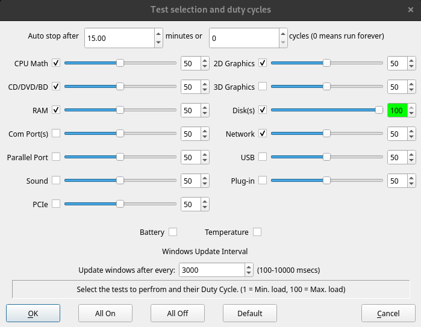

Test Selection and Duty Cycles |
Top Previous Next |
|
From this window it is possible to configure the automatic stopping of tests, select the tests to be performed and the level of load placed on the system.

Auto Stop BurnInTest can be set to automatically stop a test run by either configuring a test duration or a number of test cycles.
Test duration This option allows the user to select the period of time that tests are to run for. After the time has expired all windows (except the main window) are closed and all the tests are stopped.
The duration, in minutes should be entered in the “Auto Stop after n Minutes” field. A value of 0 in this field means that the tests will run until a manual Stop command is issued via the button bar/menu or the number of test cycles has been reached. The maximum test time in the unregistered shareware version is 15minutes per test. After the software is registered the maximum auto stop time is 10 days. (the registered version can also run forever if the manual stop option is selected).
Number of test cycles This option allows the user to select the number of cycles that tests are to run for. After all current tests have undergone the configured number of cycles in testing, all windows (except the main window) are closed and all the tests are stopped.
The number of cycles should be entered in the “or n Cycles” field. A value of 0 in this field means that the tests will run until a manual Stop command is issued via the button bar/menu or the test duration has been reached.
NOTES: 1) Both options are based on the current test run and not accumulated results. 2) The test duration and number of cycles are both used to automatically stop a test run (with a logical OR). For example, if duration is set to 15 minutes and number of cycles is set to 3. The test run will be stopped when the first of either 15 minutes OR 3 cycles is reached. If you want to automatically stop a test run based only on duration, set the number of cycles to 0 (ie. Run for the set duration OR forever). If you want to automatically stop the test run only based on the number of test cycles, set the test duration to 0 (ie. Run forever OR for the set number of cycles). 3) If you need to run each test a single time, one after the other (ie. In series, rather than in parallel), a script should be created to: Set the number of cycles, run test1, run test2, …, run test n. See SETCYCLES.
Test Check Boxes Each test has an associated check box that can be used to turn the test on or off.
Slide bars and Duty cycle Each test has a slide bar and an associated edit box. The slide bar allows the user to determine the “duty cycle” for each test. A low duty cycle means that a delay will be inserted during the execution of the test, reducing the load on the system and reducing the number of operations performed during any particular period of time. A high duty cycle corresponds to higher load. A value can also be directly entered into the edit box. The background color of the edit box will vary from dark red to white to bright green depending on the duty cycle selected.
Buttons The buttons at the bottom of the window allow all tests to be activated or deactivated with a single click. The default values can also be restored. The settings selected are saved when the OK button is clicked.
Selecting which tests to run In order to help select which tests to run, here are some general guidelines:
Only select tests that match your hardware The tests you select should correspond to the hardware installed in the PC. For example, if your computer doesn’t have a serial port, there is no point having the serial port test enabled. This will only result in a lot of errors being generated.
Selecting tests for specific testing If you suspect a problem with a particular device, (eg the RAM), leave the other tests turned off and just run this particular test at 100%. This will maximise the load on this element.
Selecting tests for general burn in testing For a general burn in, select a variety of different tests. The RAM and Disk tests are the most important. Select the other tests based on how you plan to use the computer. For example if the machine is to be used as a server, then the Network test, Tape drive test, CPU tests and CD test should also be enabled. In general it is better to test those elements that will receive the most usage once the machine is put into active use. For example the floppy drive test could be left off, (or tested at a low duty cycle), if the floppy drive is not critical for the machines intended use.
Optimise the load As all the tests run at the same time in different threads. Some care should be taken to ensure that important tests are not starved of the CPU and run too slowly. Thus it can be advantages to initially leave the CPU tests off and run with the other tests. Then add in the CPU tests but adjust the duty cycle down until the CPU load just hits 100%.
For example, assuming that the CD and disk drive are critical parts of your system, run just these tests at 100% duty cycle, then note the load on the CPU. Then add in the RAM and CPU tests at a lower duty cycle in order to fully load the CPU.
Note that there is no point trying load up the CPU to more than 100%. Adding more load once the CPU is running at 100% doesn’t result in any more processing being done. The CPUs available processing time is just redistributed and all the running processes run more slowly.
Experiment As just about everyone has different requirements don’t hesitate to experiment with the settings to obtain the best result in your environment.
|